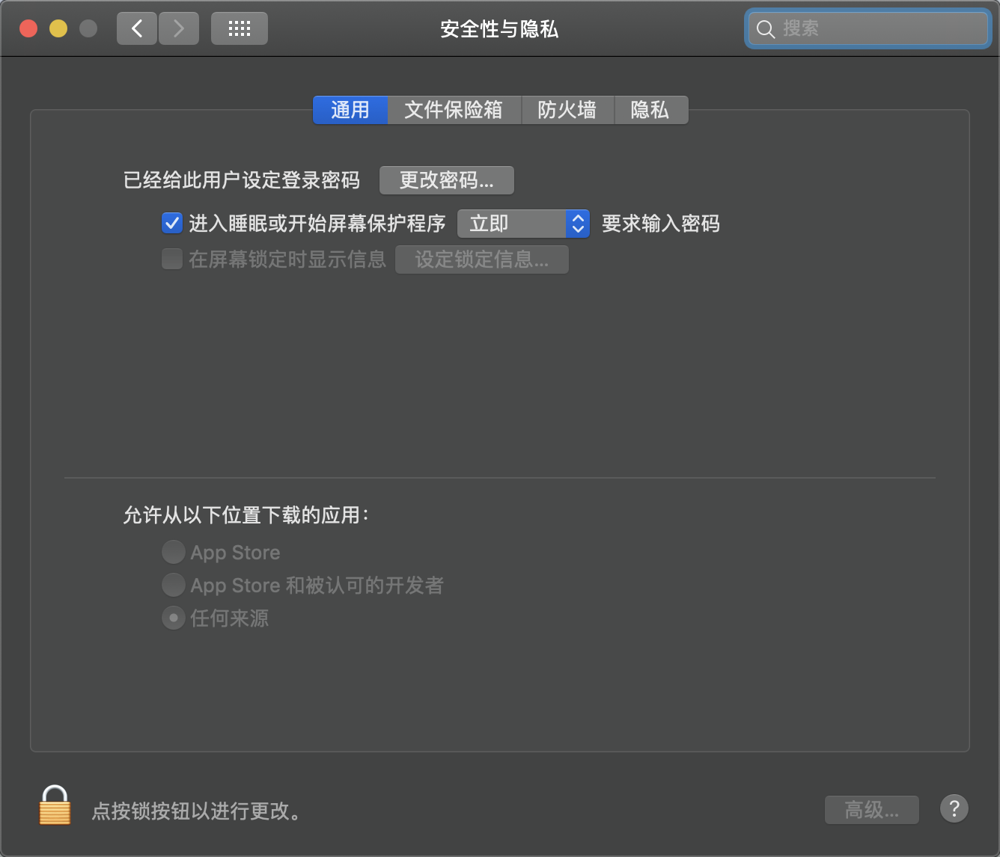
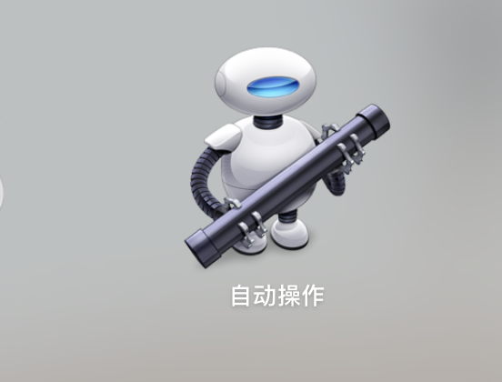
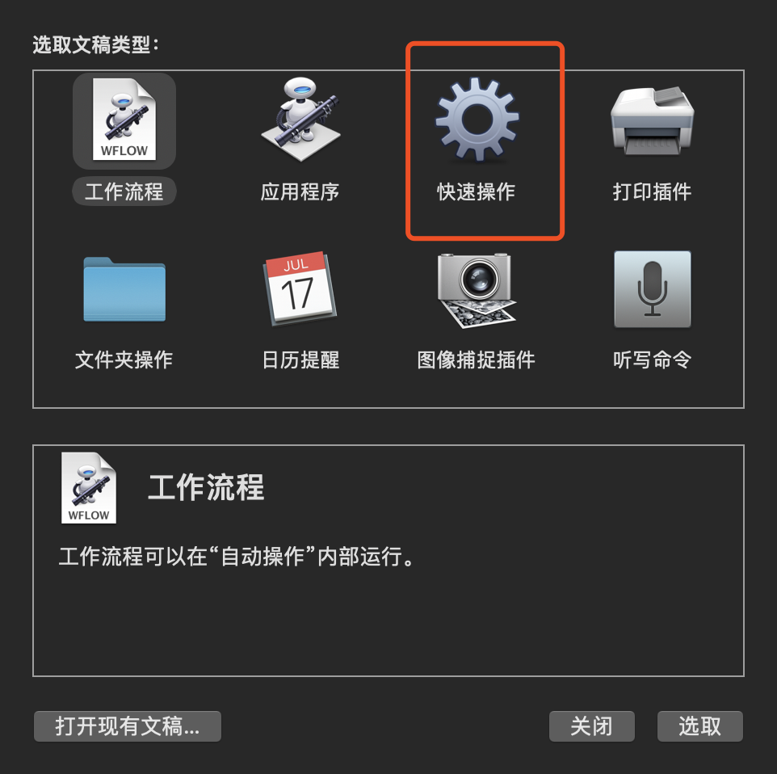
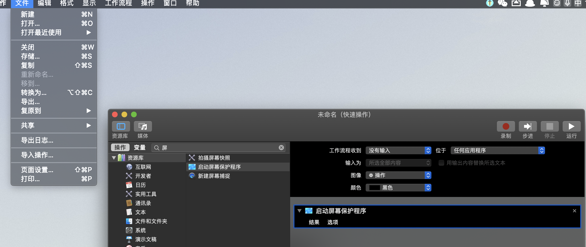
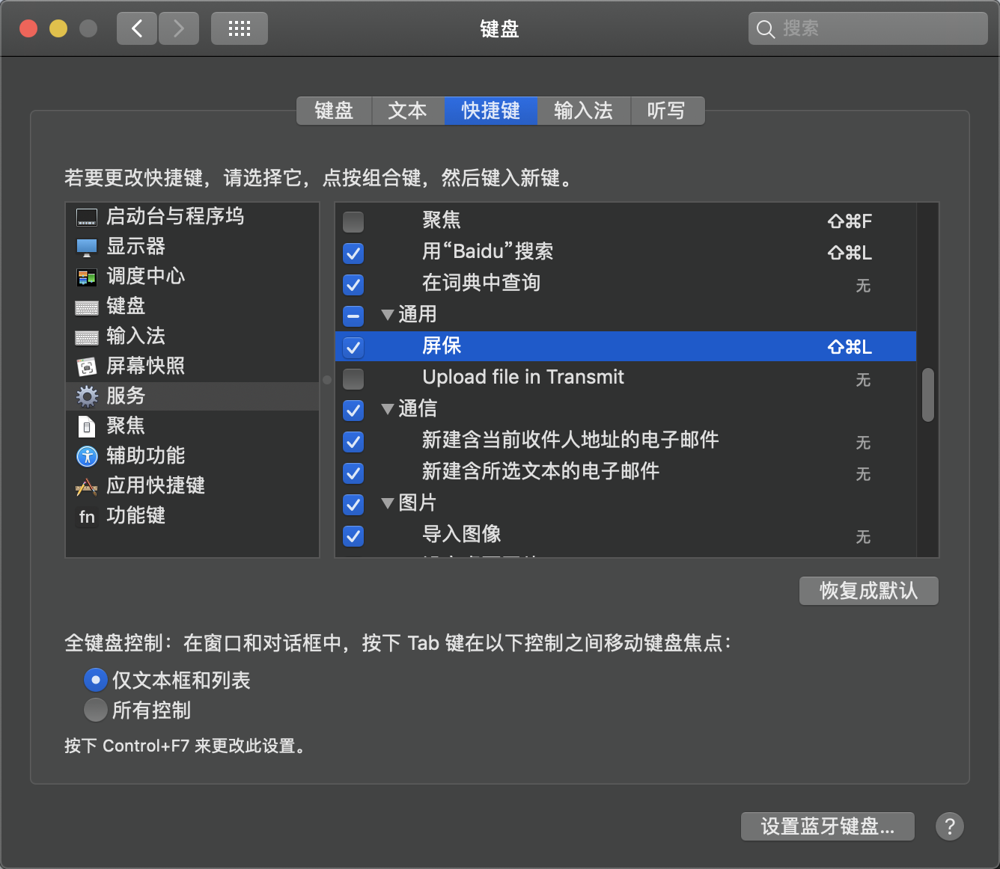

mac锁屏 不断网 快捷键
锁屏的时候不想让mac断网，特别是在使用TeamViewer时。
1、要设定锁定输入密码的设置，进入‘系统偏好设置’‘安全性与隐私’，将选项‘进入睡眠或开始屏幕保护程序后’打勾，选‘立即’。

2、到‘launchpad’中的‘其他’文件夹打开‘Automator’，或者直接到spotlight中输入定位过去(就是拿火箭筒的小机器人)

3、接下来，会弹出一个窗口，选‘新建文稿’，在弹出窗口中的‘文稿类型’选择‘服务’。

4、首先可以到搜索框中输‘屏幕’，所有和屏幕有关的项目就都出来了，包括我想要的‘启动屏幕保护程序’，选中拖动到右面的框里，记住，要把“‘服务’收到”这项改为‘没有输入’，然后到菜单‘文件’中选择‘存储’，输个服务的名称，比如‘屏保’。

5、到‘系统偏好设置’‘键盘’‘快捷键’‘服务’ 中，找到刚刚那个服务‘屏保’，添加快捷键，最好不要和其他的冲突 。
